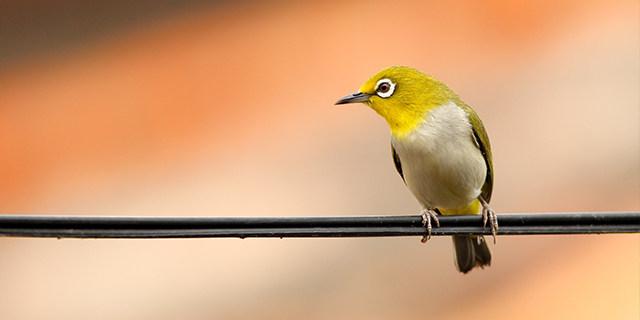

Berikut ini adalah beberapa jenis burung yang dapat Anda lihat.
Columbidae is a bird family constituted of pigeons and doves. These are stout-bodied birds with short necks, and short slender bills that in some species feature fleshy ceres. They primarily feed on seeds, fruits, and plants. The family occurs worldwide, but the greatest variety is in the Indomalaya and Australasia ecozones.
The white-eyes are small passerine birds native to tropical, subtropical and temperate Sub-Saharan Africa, southern and eastern Asia, and Australasia. White-eyes inhabit most tropical islands in the Indian Ocean, the western Pacific Ocean, and the Gulf of Guinea. Discounting some widespread members of the genus Zosterops, most species are endemic to single islands or archipelagos. The silvereye, Zosterops lateralis, naturally colonised New Zealand, where it is known as the "wax-eye" or tauhou ("stranger"), from 1855. The silvereye has also been introduced to the Society Islands in French Polynesia, while the Japanese white-eye has been introduced to Hawaii.